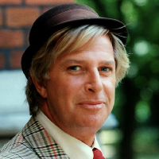

Välkommen till Vanheden Pizzeria

Vi kan garantera högsta kvalitet på våra pizzor. Det är med kärlek och passion vi tillagar våra pizzor. Kort informtion om oss. Vi är en pizzeria som grundades 1889 av Bogdan Dragansson. Pizzerian är uppkallad efter en av Sveriges mest folkkära filmiconer nämligen Ragnar Vanheden. Tanken med namnet är att locka svenska turister som gillar jönnsonligan filmerna. Vår pizzeria har gäster från hela Sverige, i alla åldrar. Alla kommer för att smaka våra pizzor som har namn från jönssonligan. Vi finns även på foodora, du kanske vill beställa, det hittar du under sidan "Beställ Pizza". Det är jag Bogdan och mina söner som driver pizzerian, jag är stolt ägare. Framtidsplaner för våran pizzeria är att vi hade tänkt expandera till alla länder i norden och utöka vårat utbund av goda pizzor.
